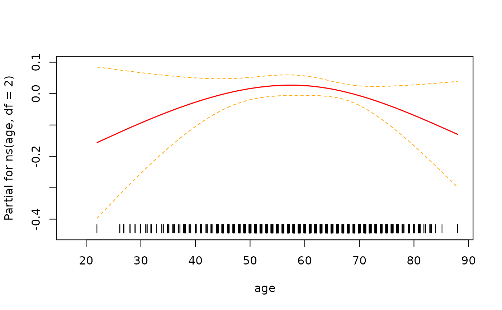

The modelsum function
Beth Atkinson, Ethan Heinzen, Pat Votruba, Jason Sinnwell, Shannon McDonnell and Greg Dougherty
Source:vignettes/modelsum.Rmd
modelsum.RmdIntroduction
Very often we are asked to summarize model results from multiple fits into a nice table. The endpoint might be of different types (e.g., survival, case/control, continuous) and there may be several independent variables that we want to examine univariately or adjusted for certain variables such as age and sex. Locally at Mayo, the SAS macros %modelsum, %glmuniv, and %logisuni were written to create such summary tables. With the increasing interest in R, we have developed the function modelsum to create similar tables within the R environment.
In developing the modelsum function, the goal was to bring the best features of these macros into an R function. However, the task was not simply to duplicate all the functionality, but rather to make use of R’s strengths (modeling, method dispersion, flexibility in function definition and output format) and make a tool that fits the needs of R users. Additionally, the results needed to fit within the general reproducible research framework so the tables could be displayed within an R markdown report.
This report provides step-by-step directions for using the functions associated with modelsum. All functions presented here are available within the arsenal package. An assumption is made that users are somewhat familiar with R markdown documents. For those who are new to the topic, a good initial resource is available at rmarkdown.rstudio.com.
Simple Example
The first step when using the modelsum function is to load the arsenal package. All the examples in this report use a dataset called mockstudy made available by Paul Novotny which includes a variety of types of variables (character, numeric, factor, ordered factor, survival) to use as examples.
> require(arsenal)
Loading required package: arsenal
> data(mockstudy) # load data
> dim(mockstudy) # look at how many subjects and variables are in the dataset
[1] 1499 14
> # help(mockstudy) # learn more about the dataset and variables
> str(mockstudy) # quick look at the data
'data.frame': 1499 obs. of 14 variables:
$ case : int 110754 99706 105271 105001 112263 86205 99508 90158 88989 90515 ...
$ age : int 67 74 50 71 69 56 50 57 51 63 ...
..- attr(*, "label")= chr "Age in Years"
$ arm : chr "F: FOLFOX" "A: IFL" "A: IFL" "G: IROX" ...
..- attr(*, "label")= chr "Treatment Arm"
$ sex : Factor w/ 2 levels "Male","Female": 1 2 2 2 2 1 1 1 2 1 ...
$ race : chr "Caucasian" "Caucasian" "Caucasian" "Caucasian" ...
..- attr(*, "label")= chr "Race"
$ fu.time : int 922 270 175 128 233 120 369 421 387 363 ...
$ fu.stat : int 2 2 2 2 2 2 2 2 2 2 ...
$ ps : int 0 1 1 1 0 0 0 0 1 1 ...
$ hgb : num 11.5 10.7 11.1 12.6 13 10.2 13.3 12.1 13.8 12.1 ...
$ bmi : num 25.1 19.5 NA 29.4 26.4 ...
..- attr(*, "label")= chr "Body Mass Index (kg/m^2)"
$ alk.phos : int 160 290 700 771 350 569 162 152 231 492 ...
$ ast : int 35 52 100 68 35 27 16 12 25 18 ...
$ mdquality.s: int NA 1 1 1 NA 1 1 1 1 1 ...
$ age.ord : Ord.factor w/ 8 levels "10-19"<"20-29"<..: 6 7 4 7 6 5 4 5 5 6 ...To create a simple linear regression table (the default), use a formula statement to specify the variables that you want summarized. The example below predicts BMI with the variables sex and age.
If you want to take a quick look at the table, you can use summary on your modelsum object and the table will print out as text in your R console window. If you use summary without any options you will see a number of \(\ \) statements which translates to “space” in HTML.
Pretty text version of table
If you want a nicer version in your console window then adding the text=TRUE option.
> summary(tab1, text=TRUE)
| |estimate |std.error |p.value |adj.r.squared |Nmiss |
|:------------|:--------|:---------|:-------|:-------------|:-----|
|(Intercept) |27.491 |0.181 |< 0.001 |0.004 |33 |
|sex Female |-0.731 |0.290 |0.012 | | |
|(Intercept) |26.424 |0.752 |< 0.001 |0.000 |33 |
|Age in Years |0.013 |0.012 |0.290 | | |Pretty Rmarkdown version of table
In order for the report to look nice within an R markdown (knitr) report, you just need to specify results="asis" when creating the r chunk. This changes the layout slightly (compresses it) and bolds the variable names.
| estimate | std.error | p.value | adj.r.squared | Nmiss | |
|---|---|---|---|---|---|
| (Intercept) | 27.491 | 0.181 | < 0.001 | 0.004 | 33 |
| sex Female | -0.731 | 0.290 | 0.012 | ||
| (Intercept) | 26.424 | 0.752 | < 0.001 | 0.000 | 33 |
| Age in Years | 0.013 | 0.012 | 0.290 |
Data frame version of table
If you want a data.frame version, simply use as.data.frame.
> as.data.frame(tab1)
y.term y.label strata.term adjustment model term
1 bmi Body Mass Index (kg/m^2) unadjusted 1 (Intercept)
2 bmi Body Mass Index (kg/m^2) unadjusted 1 sexFemale
3 bmi Body Mass Index (kg/m^2) unadjusted 2 (Intercept)
4 bmi Body Mass Index (kg/m^2) unadjusted 2 age
label term.type estimate std.error p.value adj.r.squared
1 (Intercept) Intercept 27.49147713 0.18134740 0.000000e+00 3.632258e-03
2 sex Female Term -0.73105055 0.29032223 1.190605e-02 3.632258e-03
3 (Intercept) Intercept 26.42372272 0.75211474 1.279109e-196 8.354809e-05
4 Age in Years Term 0.01304859 0.01231653 2.895753e-01 8.354809e-05
Nmiss
1 33
2 33
3 33
4 33Add an adjustor to the model
The argument adjust allows the user to indicate that all the variables should be adjusted for these terms. To adjust each model for age and sex (for instance), we use adjust = ~ age + sex:
| estimate | std.error | p.value | adj.r.squared | Nmiss | |
|---|---|---|---|---|---|
| (Intercept) | 175.548 | 20.587 | < 0.001 | -0.001 | 266 |
| Treatment Arm F: FOLFOX | -13.701 | 8.730 | 0.117 | ||
| Treatment Arm G: IROX | -2.245 | 9.860 | 0.820 | ||
| Age in Years | -0.017 | 0.319 | 0.956 | ||
| sex Female | 3.016 | 7.521 | 0.688 | ||
| (Intercept) | 148.391 | 19.585 | < 0.001 | 0.045 | 266 |
| ps | 46.721 | 5.987 | < 0.001 | ||
| Age in Years | -0.084 | 0.311 | 0.787 | ||
| sex Female | 1.169 | 7.343 | 0.874 | ||
| (Intercept) | 336.554 | 32.239 | < 0.001 | 0.031 | 266 |
| hgb | -13.845 | 2.137 | < 0.001 | ||
| Age in Years | 0.095 | 0.314 | 0.763 | ||
| sex Female | -5.980 | 7.516 | 0.426 |
Models for each endpoint type
To make sure the correct model is run you need to specify “family”. The options available right now are : gaussian, binomial, survival, and poisson. If there is enough interest, additional models can be added.
Gaussian
Fit and summarize linear regression model
Look at whether there is any evidence that AlkPhos values vary by study arm after adjusting for sex and age (assuming a linear age relationship).
> fit <- lm(alk.phos ~ arm + age + sex, data=mockstudy)
> summary(fit)
Call:
lm(formula = alk.phos ~ arm + age + sex, data = mockstudy)
Residuals:
Min 1Q Median 3Q Max
-168.80 -81.45 -47.17 37.39 853.56
Coefficients:
Estimate Std. Error t value Pr(>|t|)
(Intercept) 175.54808 20.58665 8.527 <2e-16 ***
armF: FOLFOX -13.70062 8.72963 -1.569 0.117
armG: IROX -2.24498 9.86004 -0.228 0.820
age -0.01741 0.31878 -0.055 0.956
sexFemale 3.01598 7.52097 0.401 0.688
---
Signif. codes: 0 '***' 0.001 '**' 0.01 '*' 0.05 '.' 0.1 ' ' 1
Residual standard error: 128.5 on 1228 degrees of freedom
(266 observations deleted due to missingness)
Multiple R-squared: 0.002552, Adjusted R-squared: -0.0006969
F-statistic: 0.7855 on 4 and 1228 DF, p-value: 0.5346
> plot(fit)


The results suggest that the endpoint may need to be transformed. Calculating the Box-Cox transformation suggests a log transformation.

> fit2 <- lm(log(alk.phos) ~ arm + age + sex, data=mockstudy)
> summary(fit2)
Call:
lm(formula = log(alk.phos) ~ arm + age + sex, data = mockstudy)
Residuals:
Min 1Q Median 3Q Max
-3.0098 -0.4470 -0.1065 0.4205 2.0620
Coefficients:
Estimate Std. Error t value Pr(>|t|)
(Intercept) 4.9692474 0.1025239 48.469 <2e-16 ***
armF: FOLFOX -0.0766798 0.0434746 -1.764 0.078 .
armG: IROX -0.0192828 0.0491041 -0.393 0.695
age -0.0004058 0.0015876 -0.256 0.798
sexFemale 0.0179253 0.0374553 0.479 0.632
---
Signif. codes: 0 '***' 0.001 '**' 0.01 '*' 0.05 '.' 0.1 ' ' 1
Residual standard error: 0.6401 on 1228 degrees of freedom
(266 observations deleted due to missingness)
Multiple R-squared: 0.003121, Adjusted R-squared: -0.0001258
F-statistic: 0.9613 on 4 and 1228 DF, p-value: 0.4278
> plot(fit2)


Finally, look to see whether there there is a non-linear relationship with age.
> require(splines)
Loading required package: splines
> fit3 <- lm(log(alk.phos) ~ arm + ns(age, df=2) + sex, data=mockstudy)
>
> # test whether there is a difference between models
> stats::anova(fit2,fit3)
Analysis of Variance Table
Model 1: log(alk.phos) ~ arm + age + sex
Model 2: log(alk.phos) ~ arm + ns(age, df = 2) + sex
Res.Df RSS Df Sum of Sq F Pr(>F)
1 1228 503.19
2 1227 502.07 1 1.1137 2.7218 0.09924 .
---
Signif. codes: 0 '***' 0.001 '**' 0.01 '*' 0.05 '.' 0.1 ' ' 1
>
> # look at functional form of age
> termplot(fit3, term=2, se=T, rug=T)
In this instance it looks like there isn’t enough evidence to say that the relationship is non-linear.
Extract data using the broom package
The broom package makes it easy to extract information from the fit.
> tmp <- tidy(fit3) # coefficients, p-values
> class(tmp)
[1] "tbl_df" "tbl" "data.frame"
> tmp
# A tibble: 6 x 5
term estimate std.error statistic p.value
<chr> <dbl> <dbl> <dbl> <dbl>
1 (Intercept) 4.76 0.141 33.8 1.93e-177
2 armF: FOLFOX -0.0767 0.0434 -1.77 7.78e- 2
3 armG: IROX -0.0195 0.0491 -0.396 6.92e- 1
4 ns(age, df = 2)1 0.330 0.260 1.27 2.04e- 1
5 ns(age, df = 2)2 -0.101 0.0935 -1.08 2.82e- 1
6 sexFemale 0.0183 0.0374 0.489 6.25e- 1
>
> glance(fit3)
# A tibble: 1 x 12
r.squared adj.r.squared sigma statistic p.value df logLik AIC BIC
<dbl> <dbl> <dbl> <dbl> <dbl> <dbl> <dbl> <dbl> <dbl>
1 0.00533 0.00127 0.640 1.31 0.255 5 -1196. 2405. 2441.
# … with 3 more variables: deviance <dbl>, df.residual <int>, nobs <int>Create a summary table using modelsum
> ms.logy <- modelsum(log(alk.phos) ~ arm + ps + hgb, data=mockstudy, adjust= ~age + sex,
+ family=gaussian,
+ gaussian.stats=c("estimate","CI.lower.estimate","CI.upper.estimate","p.value"))
> summary(ms.logy)| estimate | CI.lower.estimate | CI.upper.estimate | p.value | |
|---|---|---|---|---|
| (Intercept) | 4.969 | 4.768 | 5.170 | < 0.001 |
| Treatment Arm F: FOLFOX | -0.077 | -0.162 | 0.009 | 0.078 |
| Treatment Arm G: IROX | -0.019 | -0.116 | 0.077 | 0.695 |
| Age in Years | -0.000 | -0.004 | 0.003 | 0.798 |
| sex Female | 0.018 | -0.056 | 0.091 | 0.632 |
| (Intercept) | 4.832 | 4.640 | 5.023 | < 0.001 |
| ps | 0.226 | 0.167 | 0.284 | < 0.001 |
| Age in Years | -0.001 | -0.004 | 0.002 | 0.636 |
| sex Female | 0.009 | -0.063 | 0.081 | 0.814 |
| (Intercept) | 5.765 | 5.450 | 6.080 | < 0.001 |
| hgb | -0.069 | -0.090 | -0.048 | < 0.001 |
| Age in Years | 0.000 | -0.003 | 0.003 | 0.925 |
| sex Female | -0.027 | -0.101 | 0.046 | 0.468 |
Binomial
Fit and summarize logistic regression model

>
> fit <- glm(mdquality.s ~ age + sex, data=mockstudy, family=binomial)
> summary(fit)
Call:
glm(formula = mdquality.s ~ age + sex, family = binomial, data = mockstudy)
Deviance Residuals:
Min 1Q Median 3Q Max
-2.1832 0.4500 0.4569 0.4626 0.4756
Coefficients:
Estimate Std. Error z value Pr(>|z|)
(Intercept) 2.329442 0.514684 4.526 6.01e-06 ***
age -0.002353 0.008256 -0.285 0.776
sexFemale 0.039227 0.195330 0.201 0.841
---
Signif. codes: 0 '***' 0.001 '**' 0.01 '*' 0.05 '.' 0.1 ' ' 1
(Dispersion parameter for binomial family taken to be 1)
Null deviance: 807.68 on 1246 degrees of freedom
Residual deviance: 807.55 on 1244 degrees of freedom
(252 observations deleted due to missingness)
AIC: 813.55
Number of Fisher Scoring iterations: 4
>
> # create Odd's ratio w/ confidence intervals
> tmp <- data.frame(summary(fit)$coef)
> tmp
Estimate Std..Error z.value Pr...z..
(Intercept) 2.329441734 0.514683688 4.5259677 6.011977e-06
age -0.002353404 0.008255814 -0.2850602 7.755980e-01
sexFemale 0.039227292 0.195330166 0.2008256 8.408350e-01
>
> tmp$OR <- round(exp(tmp[,1]),2)
> tmp$lower.CI <- round(exp(tmp[,1] - 1.96* tmp[,2]),2)
> tmp$upper.CI <- round(exp(tmp[,1] + 1.96* tmp[,2]),2)
> names(tmp)[4] <- 'P-value'
>
> kable(tmp[,c('OR','lower.CI','upper.CI','P-value')])| OR | lower.CI | upper.CI | P-value | |
|---|---|---|---|---|
| (Intercept) | 10.27 | 3.75 | 28.17 | 0.000006 |
| age | 1.00 | 0.98 | 1.01 | 0.775598 |
| sexFemale | 1.04 | 0.71 | 1.53 | 0.840835 |
>
> # Assess the predictive ability of the model
>
> # code using the pROC package
> require(pROC)
> pred <- predict(fit, type='response')
> tmp <- pROC::roc(mockstudy$mdquality.s[!is.na(mockstudy$mdquality.s)]~ pred, plot=TRUE, percent=TRUE)
Setting levels: control = 0, case = 1
Setting direction: controls < cases
Extract data using broom package
The broom package makes it easy to extract information from the fit.
> tidy(fit, exp=T, conf.int=T) # coefficients, p-values, conf.intervals
# A tibble: 3 x 7
term estimate std.error statistic p.value conf.low conf.high
<chr> <dbl> <dbl> <dbl> <dbl> <dbl> <dbl>
1 (Intercept) 10.3 0.515 4.53 0.00000601 3.83 28.9
2 age 0.998 0.00826 -0.285 0.776 0.981 1.01
3 sexFemale 1.04 0.195 0.201 0.841 0.712 1.53
>
> glance(fit) # model summary statistics
# A tibble: 1 x 8
null.deviance df.null logLik AIC BIC deviance df.residual nobs
<dbl> <int> <dbl> <dbl> <dbl> <dbl> <int> <int>
1 808. 1246 -404. 814. 829. 808. 1244 1247Create a summary table using modelsum
| OR | CI.lower.OR | CI.upper.OR | p.value | concordance | Nmiss | |
|---|---|---|---|---|---|---|
| (Intercept) | 10.272 | 3.831 | 28.876 | < 0.001 | 0.507 | 252 |
| Age in Years | 0.998 | 0.981 | 1.014 | 0.776 | ||
| sex Female | 1.040 | 0.712 | 1.534 | 0.841 | ||
| (Intercept) | 4.814 | 1.709 | 13.221 | 0.003 | 0.550 | 273 |
| Body Mass Index (kg/m^2) | 1.023 | 0.987 | 1.063 | 0.220 | ||
| sex Female | 1.053 | 0.717 | 1.561 | 0.794 |
>
> fitall <- modelsum(mdquality.s ~ age, data=mockstudy, family=binomial,
+ binomial.stats=c("Nmiss2","OR","p.value"))
> summary(fitall)| OR | p.value | Nmiss2 | |
|---|---|---|---|
| (Intercept) | 10.493 | < 0.001 | 252 |
| Age in Years | 0.998 | 0.766 |
Survival
Fit and summarize a Cox regression model
> require(survival)
Loading required package: survival
>
> # multivariable model with all 3 terms
> fit <- coxph(Surv(fu.time, fu.stat) ~ age + sex + arm, data=mockstudy)
> summary(fit)
Call:
coxph(formula = Surv(fu.time, fu.stat) ~ age + sex + arm, data = mockstudy)
n= 1499, number of events= 1356
coef exp(coef) se(coef) z Pr(>|z|)
age 0.004600 1.004611 0.002501 1.839 0.0659 .
sexFemale 0.039893 1.040699 0.056039 0.712 0.4765
armF: FOLFOX -0.454650 0.634670 0.064878 -7.008 2.42e-12 ***
armG: IROX -0.140785 0.868676 0.072760 -1.935 0.0530 .
---
Signif. codes: 0 '***' 0.001 '**' 0.01 '*' 0.05 '.' 0.1 ' ' 1
exp(coef) exp(-coef) lower .95 upper .95
age 1.0046 0.9954 0.9997 1.0095
sexFemale 1.0407 0.9609 0.9324 1.1615
armF: FOLFOX 0.6347 1.5756 0.5589 0.7207
armG: IROX 0.8687 1.1512 0.7532 1.0018
Concordance= 0.563 (se = 0.009 )
Likelihood ratio test= 56.21 on 4 df, p=2e-11
Wald test = 56.26 on 4 df, p=2e-11
Score (logrank) test = 56.96 on 4 df, p=1e-11
>
> # check proportional hazards assumption
> fit.z <- cox.zph(fit)
> fit.z
chisq df p
age 1.41 1 0.24
sex 1.08 1 0.30
arm 1.80 2 0.41
GLOBAL 4.68 4 0.32
> plot(fit.z[1], resid=FALSE) # makes for a cleaner picture in this case
> abline(h=coef(fit)[1], col='red')
>
> # check functional form for age using pspline (penalized spline)
> # results are returned for the linear and non-linear components
> fit2 <- coxph(Surv(fu.time, fu.stat) ~ pspline(age) + sex + arm, data=mockstudy)
> fit2
Call:
coxph(formula = Surv(fu.time, fu.stat) ~ pspline(age) + sex +
arm, data = mockstudy)
coef se(coef) se2 Chisq DF p
pspline(age), linear 0.00443 0.00237 0.00237 3.48989 1.00 0.0617
pspline(age), nonlin 13.11270 3.08 0.0047
sexFemale 0.03993 0.05610 0.05607 0.50663 1.00 0.4766
armF: FOLFOX -0.46240 0.06494 0.06493 50.69608 1.00 1.1e-12
armG: IROX -0.15243 0.07301 0.07299 4.35876 1.00 0.0368
Iterations: 6 outer, 16 Newton-Raphson
Theta= 0.954
Degrees of freedom for terms= 4.1 1.0 2.0
Likelihood ratio test=70.1 on 7.08 df, p=2e-12
n= 1499, number of events= 1356
>
> # plot smoothed age to visualize why significant
> termplot(fit2, se=T, terms=1)
> abline(h=0)
>
> # The c-statistic comes out in the summary of the fit
> summary(fit2)$concordance
C se(C)
0.568432549 0.008487495
>
> # It can also be calculated using the survConcordance function
> survConcordance(Surv(fu.time, fu.stat) ~ predict(fit2), data=mockstudy)
Warning: 'survConcordance' is deprecated.
Use 'concordance' instead.
See help("Deprecated")
Warning: 'survConcordance.fit' is deprecated.
Use 'concordancefit' instead.
See help("Deprecated")
$concordance
concordant
0.5684325
$stats
concordant discordant tied.risk tied.time std(c-d)
620221.00 470282.00 5021.00 766.00 19235.49
$n
[1] 1499
$std.err
std(c-d)
0.008779125
$call
survConcordance(formula = Surv(fu.time, fu.stat) ~ predict(fit2),
data = mockstudy)
attr(,"class")
[1] "survConcordance"
Extract data using broom package
The broom package makes it easy to extract information from the fit.
> tidy(fit) # coefficients, p-values
# A tibble: 4 x 5
term estimate std.error statistic p.value
<chr> <dbl> <dbl> <dbl> <dbl>
1 age 0.00460 0.00250 1.84 6.59e- 2
2 sexFemale 0.0399 0.0560 0.712 4.77e- 1
3 armF: FOLFOX -0.455 0.0649 -7.01 2.42e-12
4 armG: IROX -0.141 0.0728 -1.93 5.30e- 2
>
> glance(fit) # model summary statistics
# A tibble: 1 x 18
n nevent statistic.log p.value.log statistic.sc p.value.sc statistic.wald
<int> <dbl> <dbl> <dbl> <dbl> <dbl> <dbl>
1 1499 1356 56.2 1.81e-11 57.0 1.26e-11 56.3
# … with 11 more variables: p.value.wald <dbl>, statistic.robust <dbl>,
# p.value.robust <dbl>, r.squared <dbl>, r.squared.max <dbl>,
# concordance <dbl>, std.error.concordance <dbl>, logLik <dbl>, AIC <dbl>,
# BIC <dbl>, nobs <int>Create a summary table using modelsum
> ##Note: You must use quotes when specifying family="survival"
> ## family=survival will not work
> summary(modelsum(Surv(fu.time, fu.stat) ~ arm,
+ adjust=~age + sex, data=mockstudy, family="survival"))| HR | CI.lower.HR | CI.upper.HR | p.value | concordance | |
|---|---|---|---|---|---|
| Treatment Arm F: FOLFOX | 0.635 | 0.559 | 0.721 | < 0.001 | 0.563 |
| Treatment Arm G: IROX | 0.869 | 0.753 | 1.002 | 0.053 | |
| Age in Years | 1.005 | 1.000 | 1.010 | 0.066 | |
| sex Female | 1.041 | 0.932 | 1.162 | 0.477 |
Poisson
Poisson regression is useful when predicting an outcome variable representing counts. It can also be useful when looking at survival data. Cox models and Poisson models are very closely related and survival data can be summarized using Poisson regression. If you have overdispersion (see if the residual deviance is much larger than degrees of freedom), you may want to use quasipoisson() instead of poisson(). Some of these diagnostics need to be done outside of modelsum.
Example 1: fit and summarize a Poisson regression model
For the first example, use the solder dataset available in the rpart package. The endpoint skips has a definite Poisson look.

>
> fit <- glm(skips ~ Opening + Solder + Mask , data=solder, family=poisson)
> stats::anova(fit, test='Chi')
Analysis of Deviance Table
Model: poisson, link: log
Response: skips
Terms added sequentially (first to last)
Df Deviance Resid. Df Resid. Dev Pr(>Chi)
NULL 899 8788.2
Opening 2 2920.5 897 5867.7 < 2.2e-16 ***
Solder 1 1168.4 896 4699.3 < 2.2e-16 ***
Mask 4 2015.7 892 2683.7 < 2.2e-16 ***
---
Signif. codes: 0 '***' 0.001 '**' 0.01 '*' 0.05 '.' 0.1 ' ' 1
> summary(fit)
Call:
glm(formula = skips ~ Opening + Solder + Mask, family = poisson,
data = solder)
Deviance Residuals:
Min 1Q Median 3Q Max
-6.1251 -1.4720 -0.7826 0.5986 6.6031
Coefficients:
Estimate Std. Error z value Pr(>|z|)
(Intercept) -1.12220 0.07742 -14.50 < 2e-16 ***
OpeningM 0.57161 0.05707 10.02 < 2e-16 ***
OpeningS 1.81475 0.05044 35.98 < 2e-16 ***
SolderThin 0.84682 0.03327 25.45 < 2e-16 ***
MaskA3 0.51315 0.07098 7.23 4.83e-13 ***
MaskA6 1.81103 0.06609 27.40 < 2e-16 ***
MaskB3 1.20225 0.06697 17.95 < 2e-16 ***
MaskB6 1.86648 0.06310 29.58 < 2e-16 ***
---
Signif. codes: 0 '***' 0.001 '**' 0.01 '*' 0.05 '.' 0.1 ' ' 1
(Dispersion parameter for poisson family taken to be 1)
Null deviance: 8788.2 on 899 degrees of freedom
Residual deviance: 2683.7 on 892 degrees of freedom
AIC: 4802.2
Number of Fisher Scoring iterations: 5Overdispersion is when the Residual deviance is larger than the degrees of freedom. This can be tested, approximately using the following code. The goal is to have a p-value that is \(>0.05\).
One possible solution is to use the quasipoisson family instead of the poisson family. This adjusts for the overdispersion.
> fit2 <- glm(skips ~ Opening + Solder + Mask, data=solder, family=quasipoisson)
> summary(fit2)
Call:
glm(formula = skips ~ Opening + Solder + Mask, family = quasipoisson,
data = solder)
Deviance Residuals:
Min 1Q Median 3Q Max
-6.1251 -1.4720 -0.7826 0.5986 6.6031
Coefficients:
Estimate Std. Error t value Pr(>|t|)
(Intercept) -1.12220 0.13483 -8.323 3.19e-16 ***
OpeningM 0.57161 0.09939 5.751 1.22e-08 ***
OpeningS 1.81475 0.08784 20.660 < 2e-16 ***
SolderThin 0.84682 0.05794 14.615 < 2e-16 ***
MaskA3 0.51315 0.12361 4.151 3.62e-05 ***
MaskA6 1.81103 0.11510 15.735 < 2e-16 ***
MaskB3 1.20225 0.11663 10.308 < 2e-16 ***
MaskB6 1.86648 0.10989 16.984 < 2e-16 ***
---
Signif. codes: 0 '***' 0.001 '**' 0.01 '*' 0.05 '.' 0.1 ' ' 1
(Dispersion parameter for quasipoisson family taken to be 3.033198)
Null deviance: 8788.2 on 899 degrees of freedom
Residual deviance: 2683.7 on 892 degrees of freedom
AIC: NA
Number of Fisher Scoring iterations: 5
Extract data using broom package
The broom package makes it easy to extract information from the fit.
> tidy(fit) # coefficients, p-values
# A tibble: 8 x 5
term estimate std.error statistic p.value
<chr> <dbl> <dbl> <dbl> <dbl>
1 (Intercept) -1.12 0.0774 -14.5 1.29e- 47
2 OpeningM 0.572 0.0571 10.0 1.29e- 23
3 OpeningS 1.81 0.0504 36.0 1.66e-283
4 SolderThin 0.847 0.0333 25.5 6.47e-143
5 MaskA3 0.513 0.0710 7.23 4.83e- 13
6 MaskA6 1.81 0.0661 27.4 2.45e-165
7 MaskB3 1.20 0.0670 18.0 4.55e- 72
8 MaskB6 1.87 0.0631 29.6 2.71e-192
>
> glance(fit) # model summary statistics
# A tibble: 1 x 8
null.deviance df.null logLik AIC BIC deviance df.residual nobs
<dbl> <int> <dbl> <dbl> <dbl> <dbl> <int> <int>
1 8788. 899 -2393. 4802. 4841. 2684. 892 900Create a summary table using modelsum
| RR | CI.lower.RR | CI.upper.RR | p.value | |
|---|---|---|---|---|
| (Intercept) | 1.533 | 1.179 | 1.952 | < 0.001 |
| Opening M | 2.328 | 1.733 | 3.167 | < 0.001 |
| Opening S | 7.491 | 5.780 | 9.888 | < 0.001 |
| (Intercept) | 2.904 | 2.423 | 3.446 | < 0.001 |
| Solder Thin | 2.808 | 2.295 | 3.458 | < 0.001 |
| (Intercept) | 1.611 | 1.135 | 2.204 | 0.005 |
| Mask A3 | 1.469 | 0.995 | 2.214 | 0.059 |
| Mask A6 | 8.331 | 5.839 | 12.222 | < 0.001 |
| Mask B3 | 3.328 | 2.309 | 4.920 | < 0.001 |
| Mask B6 | 6.466 | 4.598 | 9.378 | < 0.001 |
| RR | CI.lower.RR | CI.upper.RR | p.value | |
|---|---|---|---|---|
| (Intercept) | 1.533 | 1.397 | 1.678 | < 0.001 |
| Opening M | 2.328 | 2.089 | 2.599 | < 0.001 |
| Opening S | 7.491 | 6.805 | 8.267 | < 0.001 |
| (Intercept) | 2.904 | 2.750 | 3.065 | < 0.001 |
| Solder Thin | 2.808 | 2.637 | 2.992 | < 0.001 |
| (Intercept) | 1.611 | 1.433 | 1.804 | < 0.001 |
| Mask A3 | 1.469 | 1.280 | 1.690 | < 0.001 |
| Mask A6 | 8.331 | 7.341 | 9.487 | < 0.001 |
| Mask B3 | 3.328 | 2.923 | 3.800 | < 0.001 |
| Mask B6 | 6.466 | 5.724 | 7.331 | < 0.001 |
Example 2: fit and summarize a Poisson regression model
This second example uses the survival endpoint available in the mockstudy dataset. There is a close relationship between survival and Poisson models, and often it is easier to fit the model using Poisson regression, especially if you want to present absolute risk.
> # add .01 to the follow-up time (.01*1 day) in order to keep everyone in the analysis
> fit <- glm(fu.stat ~ offset(log(fu.time+.01)) + age + sex + arm, data=mockstudy, family=poisson)
> summary(fit)
Call:
glm(formula = fu.stat ~ offset(log(fu.time + 0.01)) + age + sex +
arm, family = poisson, data = mockstudy)
Deviance Residuals:
Min 1Q Median 3Q Max
-3.1188 -0.4041 0.3242 0.9727 4.3588
Coefficients:
Estimate Std. Error z value Pr(>|z|)
(Intercept) -5.875627 0.108984 -53.913 < 2e-16 ***
age 0.003724 0.001705 2.184 0.0290 *
sexFemale 0.027321 0.038575 0.708 0.4788
armF: FOLFOX -0.335141 0.044600 -7.514 5.72e-14 ***
armG: IROX -0.107776 0.050643 -2.128 0.0333 *
---
Signif. codes: 0 '***' 0.001 '**' 0.01 '*' 0.05 '.' 0.1 ' ' 1
(Dispersion parameter for poisson family taken to be 1)
Null deviance: 2113.5 on 1498 degrees of freedom
Residual deviance: 2048.0 on 1494 degrees of freedom
AIC: 5888.2
Number of Fisher Scoring iterations: 5
> 1-pchisq(fit$deviance, fit$df.residual)
[1] 0
>
> coef(coxph(Surv(fu.time,fu.stat) ~ age + sex + arm, data=mockstudy))
age sexFemale armF: FOLFOX armG: IROX
0.004600011 0.039892735 -0.454650445 -0.140784996
> coef(fit)[-1]
age sexFemale armF: FOLFOX armG: IROX
0.003723763 0.027320917 -0.335141090 -0.107775577
>
> # results from the Poisson model can then be described as risk ratios (similar to the hazard ratio)
> exp(coef(fit)[-1])
age sexFemale armF: FOLFOX armG: IROX
1.0037307 1.0276976 0.7152372 0.8978291
>
> # As before, we can model the dispersion which alters the standard error
> fit2 <- glm(fu.stat ~ offset(log(fu.time+.01)) + age + sex + arm,
+ data=mockstudy, family=quasipoisson)
> summary(fit2)
Call:
glm(formula = fu.stat ~ offset(log(fu.time + 0.01)) + age + sex +
arm, family = quasipoisson, data = mockstudy)
Deviance Residuals:
Min 1Q Median 3Q Max
-3.1188 -0.4041 0.3242 0.9727 4.3588
Coefficients:
Estimate Std. Error t value Pr(>|t|)
(Intercept) -5.875627 0.566666 -10.369 <2e-16 ***
age 0.003724 0.008867 0.420 0.675
sexFemale 0.027321 0.200572 0.136 0.892
armF: FOLFOX -0.335141 0.231899 -1.445 0.149
armG: IROX -0.107776 0.263318 -0.409 0.682
---
Signif. codes: 0 '***' 0.001 '**' 0.01 '*' 0.05 '.' 0.1 ' ' 1
(Dispersion parameter for quasipoisson family taken to be 27.03493)
Null deviance: 2113.5 on 1498 degrees of freedom
Residual deviance: 2048.0 on 1494 degrees of freedom
AIC: NA
Number of Fisher Scoring iterations: 5
Extract data using broom package
The broom package makes it easy to extract information from the fit.
> tidy(fit) ##coefficients, p-values
# A tibble: 5 x 5
term estimate std.error statistic p.value
<chr> <dbl> <dbl> <dbl> <dbl>
1 (Intercept) -5.88 0.109 -53.9 0.
2 age 0.00372 0.00171 2.18 2.90e- 2
3 sexFemale 0.0273 0.0386 0.708 4.79e- 1
4 armF: FOLFOX -0.335 0.0446 -7.51 5.72e-14
5 armG: IROX -0.108 0.0506 -2.13 3.33e- 2
>
> glance(fit) ##model summary statistics
# A tibble: 1 x 8
null.deviance df.null logLik AIC BIC deviance df.residual nobs
<dbl> <int> <dbl> <dbl> <dbl> <dbl> <int> <int>
1 2114. 1498 -2939. 5888. 5915. 2048. 1494 1499
Create a summary table using modelsum
Remember that the result from modelsum is different from the fit above. The modelsum summary shows the results for age + offset(log(fu.time+.01)) then sex + offset(log(fu.time+.01)) instead of age + sex + arm + offset(log(fu.time+.01)).
> summary(modelsum(fu.stat ~ age, adjust=~offset(log(fu.time+.01))+ sex + arm,
+ data=mockstudy, family=poisson))| RR | CI.lower.RR | CI.upper.RR | p.value | |
|---|---|---|---|---|
| (Intercept) | 0.003 | 0.002 | 0.003 | < 0.001 |
| Age in Years | 1.004 | 1.000 | 1.007 | 0.029 |
| sex Female | 1.028 | 0.953 | 1.108 | 0.479 |
| Treatment Arm F: FOLFOX | 0.715 | 0.656 | 0.781 | < 0.001 |
| Treatment Arm G: IROX | 0.898 | 0.813 | 0.991 | 0.033 |
Additional Examples
Here are multiple examples showing how to use some of the different options.
1. Change summary statistics globally
There are standard settings for each type of model regarding what information is summarized in the table. This behavior can be modified using the modelsum.control function. In fact, you can save your standard settings and use that for future tables.
> mycontrols <- modelsum.control(gaussian.stats=c("estimate","std.error","adj.r.squared","Nmiss"),
+ show.adjust=FALSE, show.intercept=FALSE)
> tab2 <- modelsum(bmi ~ age, adjust=~sex, data=mockstudy, control=mycontrols)
> summary(tab2)| estimate | std.error | adj.r.squared | Nmiss | |
|---|---|---|---|---|
| Age in Years | 0.012 | 0.012 | 0.004 | 33 |
You can also change these settings directly in the modelsum call.
> tab3 <- modelsum(bmi ~ age, adjust=~sex, data=mockstudy,
+ gaussian.stats=c("estimate","std.error","adj.r.squared","Nmiss"),
+ show.intercept=FALSE, show.adjust=FALSE)
> summary(tab3)| estimate | std.error | adj.r.squared | Nmiss | |
|---|---|---|---|---|
| Age in Years | 0.012 | 0.012 | 0.004 | 33 |
2. Add labels to independent variables
In the above example, age is shown with a label (Age in Years), but sex is listed “as is”. This is because the data was created in SAS and in the SAS dataset, age had a label but sex did not. The label is stored as an attribute within R.
> ## Look at one variable's label
> attr(mockstudy$age,'label')
[1] "Age in Years"
>
> ## See all the variables with a label
> unlist(lapply(mockstudy,'attr','label'))
age arm
"Age in Years" "Treatment Arm"
race bmi
"Race" "Body Mass Index (kg/m^2)"
>
> ## or
> cbind(sapply(mockstudy,attr,'label'))
[,1]
case NULL
age "Age in Years"
arm "Treatment Arm"
sex NULL
race "Race"
fu.time NULL
fu.stat NULL
ps NULL
hgb NULL
bmi "Body Mass Index (kg/m^2)"
alk.phos NULL
ast NULL
mdquality.s NULL
age.ord NULL If you want to add labels to other variables, there are a couple of options. First, you could add labels to the variables in your dataset.
> attr(mockstudy$age,'label') <- 'Age, yrs'
>
> tab1 <- modelsum(bmi ~ age, adjust=~sex, data=mockstudy)
> summary(tab1)| estimate | std.error | p.value | adj.r.squared | Nmiss | |
|---|---|---|---|---|---|
| (Intercept) | 26.793 | 0.766 | < 0.001 | 0.004 | 33 |
| Age, yrs | 0.012 | 0.012 | 0.348 | ||
| sex Female | -0.718 | 0.291 | 0.014 |
You can also use the built-in data.frame method for labels<-:
> labels(mockstudy) <- c(age = 'Age, yrs')
>
> tab1 <- modelsum(bmi ~ age, adjust=~sex, data=mockstudy)
> summary(tab1)| estimate | std.error | p.value | adj.r.squared | Nmiss | |
|---|---|---|---|---|---|
| (Intercept) | 26.793 | 0.766 | < 0.001 | 0.004 | 33 |
| Age, yrs | 0.012 | 0.012 | 0.348 | ||
| sex Female | -0.718 | 0.291 | 0.014 |
Another option is to add labels after you have created the table
> mylabels <- list(sexFemale = "Female", age ="Age, yrs")
> summary(tab1, labelTranslations = mylabels)| estimate | std.error | p.value | adj.r.squared | Nmiss | |
|---|---|---|---|---|---|
| (Intercept) | 26.793 | 0.766 | < 0.001 | 0.004 | 33 |
| Age, yrs | 0.012 | 0.012 | 0.348 | ||
| Female | -0.718 | 0.291 | 0.014 |
Alternatively, you can check the variable labels and manipulate them with a function called labels, which works on the modelsum object.
> labels(tab1)
bmi age
"Body Mass Index (kg/m^2)" "Age, yrs"
sex
"sex Female"
> labels(tab1) <- c(sexFemale="Female", age="Baseline Age (yrs)")
> labels(tab1)
bmi age
"Body Mass Index (kg/m^2)" "Baseline Age (yrs)"
sex
"Female" | estimate | std.error | p.value | adj.r.squared | Nmiss | |
|---|---|---|---|---|---|
| (Intercept) | 26.793 | 0.766 | < 0.001 | 0.004 | 33 |
| Baseline Age (yrs) | 0.012 | 0.012 | 0.348 | ||
| Female | -0.718 | 0.291 | 0.014 |
3. Don’t show intercept values
| estimate | std.error | p.value | adj.r.squared | Nmiss | |
|---|---|---|---|---|---|
| mdquality.s | -0.326 | 1.093 | 0.766 | -0.001 | 252 |
| sex Female | -1.208 | 0.610 | 0.048 | 0.002 | 0 |
4. Don’t show results for adjustment variables
> summary(modelsum(mdquality.s ~ age + bmi, data=mockstudy, adjust=~sex, family=binomial),
+ show.adjust=FALSE) | OR | CI.lower.OR | CI.upper.OR | p.value | concordance | Nmiss | |
|---|---|---|---|---|---|---|
| (Intercept) | 10.272 | 3.831 | 28.876 | < 0.001 | 0.507 | 252 |
| Age, yrs | 0.998 | 0.981 | 1.014 | 0.776 | ||
| (Intercept) | 4.814 | 1.709 | 13.221 | 0.003 | 0.550 | 273 |
| Body Mass Index (kg/m^2) | 1.023 | 0.987 | 1.063 | 0.220 |
5. Summarize multiple variables without typing them out
Often one wants to summarize a number of variables. Instead of typing by hand each individual variable, an alternative approach is to create a formula using the paste command with the collapse="+" option.
> # create a vector specifying the variable names
> myvars <- names(mockstudy)
>
> # select the 8th through the 12th
> # paste them together, separated by the + sign
> RHS <- paste(myvars[8:12], collapse="+")
> RHS[1] “ps+hgb+bmi+alk.phos+ast”
mdquality.s ~ ps + hgb + bmi + alk.phos + ast
>
> # use the formula in the modelsum function
> summary(modelsum(as.formula(paste('mdquality.s ~', RHS)), family=binomial, data=mockstudy))| OR | CI.lower.OR | CI.upper.OR | p.value | concordance | Nmiss | |
|---|---|---|---|---|---|---|
| (Intercept) | 14.628 | 10.755 | 20.399 | < 0.001 | 0.620 | 460 |
| ps | 0.461 | 0.332 | 0.639 | < 0.001 | ||
| (Intercept) | 1.236 | 0.272 | 5.560 | 0.783 | 0.573 | 460 |
| hgb | 1.176 | 1.040 | 1.334 | 0.011 | ||
| (Intercept) | 4.963 | 1.818 | 13.292 | 0.002 | 0.549 | 273 |
| Body Mass Index (kg/m^2) | 1.023 | 0.987 | 1.062 | 0.225 | ||
| (Intercept) | 10.622 | 7.687 | 14.794 | < 0.001 | 0.552 | 460 |
| alk.phos | 0.999 | 0.998 | 1.000 | 0.159 | ||
| (Intercept) | 10.936 | 7.912 | 15.232 | < 0.001 | 0.545 | 460 |
| ast | 0.995 | 0.988 | 1.001 | 0.099 |
These steps can also be done using the formulize function.
> ## The formulize function does the paste and as.formula steps
> tmp <- formulize('mdquality.s',myvars[8:10])
> tmpmdquality.s ~ ps + hgb + bmi
>
> ## More complex formulas could also be written using formulize
> tmp2 <- formulize('mdquality.s',c('ps','hgb','sqrt(bmi)'))
>
> ## use the formula in the modelsum function
> summary(modelsum(tmp, data=mockstudy, family=binomial))| OR | CI.lower.OR | CI.upper.OR | p.value | concordance | Nmiss | |
|---|---|---|---|---|---|---|
| (Intercept) | 14.628 | 10.755 | 20.399 | < 0.001 | 0.620 | 460 |
| ps | 0.461 | 0.332 | 0.639 | < 0.001 | ||
| (Intercept) | 1.236 | 0.272 | 5.560 | 0.783 | 0.573 | 460 |
| hgb | 1.176 | 1.040 | 1.334 | 0.011 | ||
| (Intercept) | 4.963 | 1.818 | 13.292 | 0.002 | 0.549 | 273 |
| Body Mass Index (kg/m^2) | 1.023 | 0.987 | 1.062 | 0.225 |
6. Subset the dataset used in the analysis
Here are two ways to get the same result (limit the analysis to subjects age>50 and in the F: FOLFOX treatment group).
- The first approach uses the subset function applied to the dataset
mockstudy. This example also selects a subset of variables. Themodelsumfunction is then applied to this subsetted data.
> newdata <- subset(mockstudy, subset=age>50 & arm=='F: FOLFOX', select = c(age,sex, bmi:alk.phos))
> dim(mockstudy)
[1] 1499 14
> table(mockstudy$arm)
A: IFL F: FOLFOX G: IROX
428 691 380
> dim(newdata)
[1] 557 4
> names(newdata)
[1] "age" "sex" "bmi" "alk.phos"| estimate | std.error | p.value | adj.r.squared | Nmiss | |
|---|---|---|---|---|---|
| (Intercept) | 122.577 | 46.924 | 0.009 | -0.001 | 108 |
| age | 0.619 | 0.719 | 0.390 | ||
| (Intercept) | 164.814 | 7.673 | < 0.001 | -0.002 | 108 |
| sex Female | -5.497 | 12.118 | 0.650 | ||
| (Intercept) | 238.658 | 33.705 | < 0.001 | 0.010 | 119 |
| bmi | -2.776 | 1.207 | 0.022 |
- The second approach does the same analysis but uses the subset argument within
modelsumto subset the data.
> summary(modelsum(log(alk.phos) ~ sex + ps + bmi, subset=age>50 & arm=="F: FOLFOX", data=mockstudy))| estimate | std.error | p.value | adj.r.squared | Nmiss | |
|---|---|---|---|---|---|
| (Intercept) | 4.872 | 0.039 | < 0.001 | -0.002 | 108 |
| sex Female | -0.005 | 0.062 | 0.931 | ||
| (Intercept) | 4.770 | 0.040 | < 0.001 | 0.027 | 108 |
| ps | 0.183 | 0.050 | < 0.001 | ||
| (Intercept) | 5.207 | 0.172 | < 0.001 | 0.007 | 119 |
| Body Mass Index (kg/m^2) | -0.012 | 0.006 | 0.044 |
| estimate | std.error | p.value | adj.r.squared | Nmiss | |
|---|---|---|---|---|---|
| (Intercept) | 178.812 | 14.550 | < 0.001 | 0.007 | 77 |
| ps | 20.834 | 13.440 | 0.122 | ||
| sex Female | -17.542 | 16.656 | 0.293 | ||
| (Intercept) | 373.008 | 104.272 | < 0.001 | 0.009 | 77 |
| Body Mass Index (kg/m^2) | -8.239 | 4.727 | 0.083 | ||
| sex Female | -24.058 | 16.855 | 0.155 |
| estimate | std.error | p.value | adj.r.squared | Nmiss | |
|---|---|---|---|---|---|
| (Intercept) | 169.112 | 57.013 | 0.006 | 0.294 | 0 |
| ps | 254.901 | 68.100 | < 0.001 | ||
| sex Female | 49.566 | 67.643 | 0.470 | ||
| (Intercept) | 453.070 | 200.651 | 0.033 | -0.049 | 1 |
| Body Mass Index (kg/m^2) | -5.993 | 7.408 | 0.426 | ||
| sex Female | -22.308 | 79.776 | 0.782 |
7. Create combinations of variables on the fly
> ## create a variable combining the levels of mdquality.s and sex
> with(mockstudy, table(interaction(mdquality.s,sex)))
0.Male 1.Male 0.Female 1.Female
77 686 47 437 | estimate | std.error | p.value | adj.r.squared | Nmiss | |
|---|---|---|---|---|---|
| (Intercept) | 59.714 | 1.314 | < 0.001 | 0.003 | 252 |
| interaction(mdquality.s, sex) 1.Male | 0.730 | 1.385 | 0.598 | ||
| interaction(mdquality.s, sex) 0.Female | 0.988 | 2.134 | 0.643 | ||
| interaction(mdquality.s, sex) 1.Female | -1.021 | 1.425 | 0.474 |
8. Transform variables on the fly
Certain transformations need to be surrounded by I() so that R knows to treat it as a variable transformation and not some special model feature. If the transformation includes any of the symbols / - + ^ * then surround the new variable by I().
> summary(modelsum(arm=="F: FOLFOX" ~ I(age/10) + log(bmi) + mdquality.s,
+ data=mockstudy, family=binomial))| OR | CI.lower.OR | CI.upper.OR | p.value | concordance | Nmiss | |
|---|---|---|---|---|---|---|
| (Intercept) | 0.656 | 0.382 | 1.124 | 0.126 | 0.514 | 0 |
| Age, yrs | 1.045 | 0.957 | 1.142 | 0.326 | ||
| (Intercept) | 0.633 | 0.108 | 3.698 | 0.611 | 0.508 | 33 |
| Body Mass Index (kg/m^2) | 1.092 | 0.638 | 1.867 | 0.748 | ||
| (Intercept) | 0.722 | 0.503 | 1.029 | 0.074 | 0.502 | 252 |
| mdquality.s | 1.045 | 0.719 | 1.527 | 0.819 |
9. Change the ordering of the variables or delete a variable
> mytab <- modelsum(bmi ~ sex + alk.phos + age, data=mockstudy)
> mytab2 <- mytab[c('age','sex','alk.phos')]
> summary(mytab2)| estimate | std.error | p.value | adj.r.squared | Nmiss | |
|---|---|---|---|---|---|
| (Intercept) | 26.424 | 0.752 | < 0.001 | 0.000 | 33 |
| Age, yrs | 0.013 | 0.012 | 0.290 | ||
| (Intercept) | 27.491 | 0.181 | < 0.001 | 0.004 | 33 |
| sex Female | -0.731 | 0.290 | 0.012 | ||
| (Intercept) | 27.944 | 0.253 | < 0.001 | 0.011 | 294 |
| alk.phos | -0.005 | 0.001 | < 0.001 |
| estimate | std.error | p.value | adj.r.squared | Nmiss | |
|---|---|---|---|---|---|
| (Intercept) | 26.424 | 0.752 | < 0.001 | 0.000 | 33 |
| Age, yrs | 0.013 | 0.012 | 0.290 | ||
| (Intercept) | 27.491 | 0.181 | < 0.001 | 0.004 | 33 |
| sex Female | -0.731 | 0.290 | 0.012 |
| estimate | std.error | p.value | adj.r.squared | Nmiss | |
|---|---|---|---|---|---|
| (Intercept) | 26.424 | 0.752 | < 0.001 | 0.000 | 33 |
| Age, yrs | 0.013 | 0.012 | 0.290 | ||
| (Intercept) | 27.491 | 0.181 | < 0.001 | 0.004 | 33 |
| sex Female | -0.731 | 0.290 | 0.012 |
10. Merge two modelsum objects together
It is possible to merge two modelsum objects so that they print out together, however you need to pay attention to the columns that are being displayed. It is sometimes easier to combine two models of the same family (such as two sets of linear models). Overlapping y-variables will have their x-variables concatenated, and (if all=TRUE) non-overlapping y-variables will have their tables printed separately.
> ## demographics
> tab1 <- modelsum(bmi ~ sex + age, data=mockstudy)
> ## lab data
> tab2 <- modelsum(mdquality.s ~ hgb + alk.phos, data=mockstudy, family=binomial)
>
> tab12 <- merge(tab1, tab2, all = TRUE)
> class(tab12)[1] “modelsum” “arsenal_table”
| estimate | std.error | p.value | adj.r.squared | Nmiss | |
|---|---|---|---|---|---|
| (Intercept) | 27.491 | 0.181 | < 0.001 | 0.004 | 33 |
| sex Female | -0.731 | 0.290 | 0.012 | ||
| (Intercept) | 26.424 | 0.752 | < 0.001 | 0.000 | 33 |
| Age, yrs | 0.013 | 0.012 | 0.290 |
| OR | CI.lower.OR | CI.upper.OR | p.value | concordance | Nmiss | |
|---|---|---|---|---|---|---|
| (Intercept) | 1.236 | 0.272 | 5.560 | 0.783 | 0.573 | 460 |
| hgb | 1.176 | 1.040 | 1.334 | 0.011 | ||
| (Intercept) | 10.622 | 7.687 | 14.794 | < 0.001 | 0.552 | 460 |
| alk.phos | 0.999 | 0.998 | 1.000 | 0.159 |
11. Add a title to the table
When creating a pdf the tables are automatically numbered and the title appears below the table. In Word and HTML, the titles appear un-numbered and above the table.
| estimate | std.error | p.value | adj.r.squared | Nmiss | |
|---|---|---|---|---|---|
| (Intercept) | 27.491 | 0.181 | < 0.001 | 0.004 | 33 |
| sex Female | -0.731 | 0.290 | 0.012 | ||
| (Intercept) | 26.424 | 0.752 | < 0.001 | 0.000 | 33 |
| Age, yrs | 0.013 | 0.012 | 0.290 |
12. Modify how missing values are treated
Depending on the report you are writing you have the following options:
Use all values available for each variable
Use only those subjects who have measurements available for all the variables
> ## look at how many missing values there are for each variable
> apply(is.na(mockstudy),2,sum)
case age arm sex race fu.time
0 0 0 0 7 0
fu.stat ps hgb bmi alk.phos ast
0 266 266 33 266 266
mdquality.s age.ord
252 0 > ## Show how many subjects have each variable (non-missing)
> summary(modelsum(bmi ~ ast + age, data=mockstudy,
+ control=modelsum.control(gaussian.stats=c("N","estimate"))))| estimate | N | |
|---|---|---|
| (Intercept) | 27.331 | 1205 |
| ast | -0.005 | |
| (Intercept) | 26.424 | 1466 |
| Age, yrs | 0.013 |
>
> ## Always list the number of missing values
> summary(modelsum(bmi ~ ast + age, data=mockstudy,
+ control=modelsum.control(gaussian.stats=c("Nmiss2","estimate"))))| estimate | Nmiss2 | |
|---|---|---|
| (Intercept) | 27.331 | 294 |
| ast | -0.005 | |
| (Intercept) | 26.424 | 33 |
| Age, yrs | 0.013 |
>
> ## Only show the missing values if there are some (default)
> summary(modelsum(bmi ~ ast + age, data=mockstudy,
+ control=modelsum.control(gaussian.stats=c("Nmiss","estimate"))))| estimate | Nmiss | |
|---|---|---|
| (Intercept) | 27.331 | 294 |
| ast | -0.005 | |
| (Intercept) | 26.424 | 33 |
| Age, yrs | 0.013 |
>
> ## Don't show N at all
> summary(modelsum(bmi ~ ast + age, data=mockstudy,
+ control=modelsum.control(gaussian.stats=c("estimate"))))| estimate | |
|---|---|
| (Intercept) | 27.331 |
| ast | -0.005 |
| (Intercept) | 26.424 |
| Age, yrs | 0.013 |
13. Modify the number of digits used
Within modelsum.control function there are 3 options for controlling the number of significant digits shown.
digits: controls the number of digits after the decimal point for continuous values
digits.ratio: controls the number of digits after the decimal point for continuous values
digits.p: controls the number of digits after the decimal point for continuous values
> summary(modelsum(bmi ~ sex + age + fu.time, data=mockstudy), digits=4, digits.test=2)
Warning: Using 'digits.test = ' is deprecated. Use 'digits.p = ' instead.| estimate | std.error | p.value | adj.r.squared | Nmiss | |
|---|---|---|---|---|---|
| (Intercept) | 27.4915 | 0.1813 | < 0.001 | 0.0036 | 33 |
| sex Female | -0.7311 | 0.2903 | 0.012 | ||
| (Intercept) | 26.4237 | 0.7521 | < 0.001 | 0.0001 | 33 |
| Age, yrs | 0.0130 | 0.0123 | 0.290 | ||
| (Intercept) | 26.4937 | 0.2447 | < 0.001 | 0.0079 | 33 |
| fu.time | 0.0011 | 0.0003 | < 0.001 |
14. Use case-weights in the models
Occasionally it is of interest to fit models using case weights. The modelsum function allows you to pass on the weights to the models and it will do the appropriate fit.
> mockstudy$agegp <- cut(mockstudy$age, breaks=c(18,50,60,70,90), right=FALSE)
>
> ## create weights based on agegp and sex distribution
> tab1 <- with(mockstudy,table(agegp, sex))
> tab1
sex
agegp Male Female
[18,50) 152 110
[50,60) 258 178
[60,70) 295 173
[70,90) 211 122
> tab2 <- with(mockstudy, table(agegp, sex, arm))
> gpwts <- rep(tab1, length(unique(mockstudy$arm)))/tab2
>
> ## apply weights to subjects
> index <- with(mockstudy, cbind(as.numeric(agegp), as.numeric(sex), as.numeric(as.factor(arm))))
> mockstudy$wts <- gpwts[index]
>
> ## show weights by treatment arm group
> tapply(mockstudy$wts,mockstudy$arm, summary)
$`A: IFL`
Min. 1st Qu. Median Mean 3rd Qu. Max.
2.923 3.225 3.548 3.502 3.844 4.045
$`F: FOLFOX`
Min. 1st Qu. Median Mean 3rd Qu. Max.
2.033 2.070 2.201 2.169 2.263 2.303
$`G: IROX`
Min. 1st Qu. Median Mean 3rd Qu. Max.
3.667 3.734 4.023 3.945 4.031 4.471 > mockstudy$newvarA <- as.numeric(mockstudy$arm=='A: IFL')
> tab1 <- modelsum(newvarA ~ ast + bmi + hgb, data=mockstudy, subset=(arm !='G: IROX'),
+ family=binomial)
> summary(tab1, title='No Case Weights used')| OR | CI.lower.OR | CI.upper.OR | p.value | concordance | Nmiss | |
|---|---|---|---|---|---|---|
| (Intercept) | 0.590 | 0.473 | 0.735 | < 0.001 | 0.550 | 210 |
| ast | 1.003 | 0.998 | 1.008 | 0.258 | ||
| (Intercept) | 0.578 | 0.306 | 1.093 | 0.091 | 0.500 | 29 |
| Body Mass Index (kg/m^2) | 1.003 | 0.980 | 1.026 | 0.808 | ||
| (Intercept) | 1.006 | 0.386 | 2.631 | 0.990 | 0.514 | 210 |
| hgb | 0.965 | 0.894 | 1.043 | 0.372 |
>
> suppressWarnings({
+ tab2 <- modelsum(newvarA ~ ast + bmi + hgb, data=mockstudy, subset=(arm !='G: IROX'),
+ weights=wts, family=binomial)
+ summary(tab2, title='Case Weights used')
+ })| OR | CI.lower.OR | CI.upper.OR | p.value | concordance | Nmiss | |
|---|---|---|---|---|---|---|
| (Intercept) | 0.956 | 0.837 | 1.091 | 0.504 | 0.550 | 210 |
| ast | 1.003 | 1.000 | 1.006 | 0.068 | ||
| (Intercept) | 0.957 | 0.658 | 1.393 | 0.820 | 0.500 | 29 |
| Body Mass Index (kg/m^2) | 1.002 | 0.988 | 1.016 | 0.780 | ||
| (Intercept) | 1.829 | 1.031 | 3.248 | 0.039 | 0.514 | 210 |
| hgb | 0.956 | 0.913 | 1.001 | 0.058 |
15. Use modelsum within an Sweave document
For those users who wish to create tables within an Sweave document, the following code seems to work.
\documentclass{article}
\usepackage{longtable}
\usepackage{pdfpages}
\begin{document}
\section{Read in Data}
<<echo=TRUE>>=
require(arsenal)
require(knitr)
require(rmarkdown)
data(mockstudy)
tab1 <- modelsum(bmi~sex+age, data=mockstudy)
@
\section{Convert Summary.modelsum to LaTeX}
<<echo=TRUE, results='hide', message=FALSE>>=
capture.output(summary(tab1), file="Test.md")
## Convert R Markdown Table to LaTeX
render("Test.md", pdf_document(keep_tex=TRUE))
@
\includepdf{Test.pdf}
\end{document}
16. Export modelsum results to a .CSV file
When looking at multiple variables it is sometimes useful to export the results to a csv file. The as.data.frame function creates a data frame object that can be exported or further manipulated within R.
> summary(tab2, text=T)
| |OR |CI.lower.OR |CI.upper.OR |p.value |concordance |Nmiss |
|:------------------------|:-----|:-----------|:-----------|:-------|:-----------|:-----|
|(Intercept) |0.956 |0.837 |1.091 |0.504 |0.550 |210 |
|ast |1.003 |1.000 |1.006 |0.068 | | |
|(Intercept) |0.957 |0.658 |1.393 |0.820 |0.500 |29 |
|Body Mass Index (kg/m^2) |1.002 |0.988 |1.016 |0.780 | | |
|(Intercept) |1.829 |1.031 |3.248 |0.039 |0.514 |210 |
|hgb |0.956 |0.913 |1.001 |0.058 | | |
> tmp <- as.data.frame(summary(tab2, text = TRUE))
> tmp
OR CI.lower.OR CI.upper.OR p.value concordance
1 (Intercept) 0.956 0.837 1.091 0.504 0.550
2 ast 1.003 1.000 1.006 0.068
3 (Intercept) 0.957 0.658 1.393 0.820 0.500
4 Body Mass Index (kg/m^2) 1.002 0.988 1.016 0.780
5 (Intercept) 1.829 1.031 3.248 0.039 0.514
6 hgb 0.956 0.913 1.001 0.058
Nmiss
1 210
2
3 29
4
5 210
6
> # write.csv(tmp, '/my/path/here/mymodel.csv')
18. Use modelsum in R Shiny
The easiest way to output a modelsum() object in an R Shiny app is to use the tableOutput() UI in combination with the renderTable() server function and as.data.frame(summary(modelsum())):
> # A standalone shiny app
> library(shiny)
> library(arsenal)
> data(mockstudy)
>
> shinyApp(
+ ui = fluidPage(tableOutput("table")),
+ server = function(input, output) {
+ output$table <- renderTable({
+ as.data.frame(summary(modelsum(age ~ sex, data = mockstudy), text = "html"))
+ }, sanitize.text.function = function(x) x)
+ }
+ )This can be especially powerful if you feed the selections from a selectInput(multiple = TRUE) into formulize() to make the table dynamic!
23. Use modelsum in bookdown
Since the backbone of modelsum() is knitr::kable(), tables still render well in bookdown. However, print.summary.modelsum() doesn’t use the caption= argument of kable(), so some tables may not have a properly numbered caption. To fix this, use the method described on the bookdown site to give the table a tag/ID.
24. Model multiple endpoints
You can now use list() on the left-hand side of modelsum() to give multiple endpoints. Note that only one “family” can be specified this way (use merge() instead if you want multiple families).
| estimate | std.error | p.value | adj.r.squared | Nmiss | |
|---|---|---|---|---|---|
| (Intercept) | 58.053 | 1.614 | < 0.001 | -0.001 | 33 |
| Body Mass Index (kg/m^2) | 0.059 | 0.055 | 0.289 | ||
| Treatment Arm F: FOLFOX | 0.593 | 0.718 | 0.408 | ||
| Treatment Arm G: IROX | 0.171 | 0.819 | 0.834 | ||
| (Intercept) | 60.108 | 0.597 | < 0.001 | 0.001 | 0 |
| sex Female | -1.232 | 0.611 | 0.044 | ||
| Treatment Arm F: FOLFOX | 0.693 | 0.709 | 0.329 | ||
| Treatment Arm G: IROX | 0.148 | 0.812 | 0.855 |
| estimate | std.error | p.value | adj.r.squared | Nmiss | |
|---|---|---|---|---|---|
| (Intercept) | 11.565 | 0.267 | < 0.001 | 0.005 | 294 |
| Body Mass Index (kg/m^2) | 0.028 | 0.009 | 0.003 | ||
| Treatment Arm F: FOLFOX | 0.046 | 0.118 | 0.699 | ||
| Treatment Arm G: IROX | 0.065 | 0.133 | 0.624 | ||
| (Intercept) | 12.505 | 0.096 | < 0.001 | 0.032 | 266 |
| sex Female | -0.642 | 0.099 | < 0.001 | ||
| Treatment Arm F: FOLFOX | 0.131 | 0.115 | 0.256 | ||
| Treatment Arm G: IROX | 0.131 | 0.130 | 0.313 |
To avoid confusion about which table is which endpoint, you can set term.name=TRUE in summary(). This takes the labels for each endpoint and puts them in the top-left of the table.
| Age, yrs | estimate | std.error | p.value | adj.r.squared | Nmiss |
|---|---|---|---|---|---|
| (Intercept) | 58.053 | 1.614 | < 0.001 | -0.001 | 33 |
| Body Mass Index (kg/m^2) | 0.059 | 0.055 | 0.289 | ||
| Treatment Arm F: FOLFOX | 0.593 | 0.718 | 0.408 | ||
| Treatment Arm G: IROX | 0.171 | 0.819 | 0.834 | ||
| (Intercept) | 60.108 | 0.597 | < 0.001 | 0.001 | 0 |
| sex Female | -1.232 | 0.611 | 0.044 | ||
| Treatment Arm F: FOLFOX | 0.693 | 0.709 | 0.329 | ||
| Treatment Arm G: IROX | 0.148 | 0.812 | 0.855 |
| hgb | estimate | std.error | p.value | adj.r.squared | Nmiss |
|---|---|---|---|---|---|
| (Intercept) | 11.565 | 0.267 | < 0.001 | 0.005 | 294 |
| Body Mass Index (kg/m^2) | 0.028 | 0.009 | 0.003 | ||
| Treatment Arm F: FOLFOX | 0.046 | 0.118 | 0.699 | ||
| Treatment Arm G: IROX | 0.065 | 0.133 | 0.624 | ||
| (Intercept) | 12.505 | 0.096 | < 0.001 | 0.032 | 266 |
| sex Female | -0.642 | 0.099 | < 0.001 | ||
| Treatment Arm F: FOLFOX | 0.131 | 0.115 | 0.256 | ||
| Treatment Arm G: IROX | 0.131 | 0.130 | 0.313 |
25. Model data by a non-test group (strata)
You can also specify a grouping variable that doesn’t get tested (but instead separates results): a strata variable.
| Treatment Arm | estimate | std.error | p.value | adj.r.squared | Nmiss | |
|---|---|---|---|---|---|---|
| A: IFL | (Intercept) | 59.147 | 2.783 | < 0.001 | -0.002 | 9 |
| Body Mass Index (kg/m^2) | 0.019 | 0.100 | 0.851 | |||
| (Intercept) | 59.903 | 0.683 | < 0.001 | -0.002 | 0 | |
| sex Female | -0.651 | 1.151 | 0.572 | |||
| F: FOLFOX | (Intercept) | 57.194 | 2.407 | < 0.001 | 0.001 | 20 |
| Body Mass Index (kg/m^2) | 0.112 | 0.087 | 0.197 | |||
| (Intercept) | 60.691 | 0.574 | < 0.001 | 0.000 | 0 | |
| sex Female | -0.962 | 0.901 | 0.286 | |||
| G: IROX | (Intercept) | 59.188 | 2.873 | < 0.001 | -0.003 | 4 |
| Body Mass Index (kg/m^2) | 0.023 | 0.104 | 0.822 | |||
| (Intercept) | 60.702 | 0.759 | < 0.001 | 0.007 | 0 | |
| sex Female | -2.346 | 1.200 | 0.051 |
| Treatment Arm | estimate | std.error | p.value | adj.r.squared | Nmiss | |
|---|---|---|---|---|---|---|
| A: IFL | (Intercept) | 11.247 | 0.459 | < 0.001 | 0.013 | 77 |
| Body Mass Index (kg/m^2) | 0.039 | 0.017 | 0.018 | |||
| (Intercept) | 12.527 | 0.109 | < 0.001 | 0.037 | 69 | |
| sex Female | -0.703 | 0.182 | < 0.001 | |||
| F: FOLFOX | (Intercept) | 11.661 | 0.414 | < 0.001 | 0.004 | 157 |
| Body Mass Index (kg/m^2) | 0.026 | 0.015 | 0.085 | |||
| (Intercept) | 12.661 | 0.095 | < 0.001 | 0.037 | 141 | |
| sex Female | -0.707 | 0.151 | < 0.001 | |||
| G: IROX | (Intercept) | 11.874 | 0.457 | < 0.001 | 0.001 | 60 |
| Body Mass Index (kg/m^2) | 0.019 | 0.017 | 0.264 | |||
| (Intercept) | 12.565 | 0.121 | < 0.001 | 0.016 | 56 | |
| sex Female | -0.470 | 0.188 | 0.013 |
26. Add multiple sets of adjustors to the model
By putting multiple formulas into a list, you can use multiple sets of adjustors. Use ~ 1 or NULL for an “unadjusted” model. By using the adjustment.names=TRUE argument and giving names to your adjustor sets in the list, you can name the various analyses.
> adj.list <- list(
+ Unadjusted = ~ 1, # can also specify NULL here
+ "Adjusted for Arm" = ~ arm
+ )
> multi.adjust <- modelsum(list(age, bmi) ~ fu.time + ast, adjust = adj.list, data = mockstudy)
> summary(multi.adjust, adjustment.names = TRUE)
|adjustment | |estimate |std.error |p.value |adj.r.squared |Nmiss |
|:----------------|:---------------------------|:--------|:---------|:-------|:-------------|:-----|
|Unadjusted |(Intercept) |60.766 |0.512 |< 0.001 |0.002 |0 |
| |**fu.time** |-0.001 |0.001 |0.061 | | |
|Adjusted for Arm |(Intercept) |60.420 |0.663 |< 0.001 |0.002 |0 |
| |**fu.time** |-0.001 |0.001 |0.039 | | |
| |**Treatment Arm F: FOLFOX** |0.868 |0.717 |0.227 | | |
| |**Treatment Arm G: IROX** |0.163 |0.812 |0.841 | | |
|Unadjusted |(Intercept) |61.343 |0.547 |< 0.001 |0.004 |266 |
| |**ast** |-0.030 |0.012 |0.014 | | |
|Adjusted for Arm |(Intercept) |61.236 |0.757 |< 0.001 |0.005 |266 |
| |**ast** |-0.030 |0.012 |0.015 | | |
| |**Treatment Arm F: FOLFOX** |0.653 |0.779 |0.403 | | |
| |**Treatment Arm G: IROX** |-0.728 |0.880 |0.408 | | |
|adjustment | |estimate |std.error |p.value |adj.r.squared |Nmiss |
|:----------------|:---------------------------|:--------|:---------|:-------|:-------------|:-----|
|Unadjusted |(Intercept) |26.494 |0.245 |< 0.001 |0.008 |33 |
| |**fu.time** |0.001 |0.000 |< 0.001 | | |
|Adjusted for Arm |(Intercept) |26.658 |0.317 |< 0.001 |0.007 |33 |
| |**fu.time** |0.001 |0.000 |< 0.001 | | |
| |**Treatment Arm F: FOLFOX** |-0.280 |0.341 |0.413 | | |
| |**Treatment Arm G: IROX** |-0.237 |0.385 |0.538 | | |
|Unadjusted |(Intercept) |27.331 |0.259 |< 0.001 |-0.000 |294 |
| |**ast** |-0.005 |0.006 |0.433 | | |
|Adjusted for Arm |(Intercept) |27.291 |0.356 |< 0.001 |-0.001 |294 |
| |**ast** |-0.004 |0.006 |0.440 | | |
| |**Treatment Arm F: FOLFOX** |0.181 |0.368 |0.623 | | |
| |**Treatment Arm G: IROX** |-0.161 |0.414 |0.698 | | |
> summary(multi.adjust, adjustment.names = TRUE, show.intercept = FALSE, show.adjust = FALSE)
|adjustment | |estimate |std.error |p.value |adj.r.squared |Nmiss |
|:----------------|:-----------|:--------|:---------|:-------|:-------------|:-----|
|Unadjusted |**fu.time** |-0.001 |0.001 |0.061 |0.002 |0 |
|Adjusted for Arm |**fu.time** |-0.001 |0.001 |0.039 |0.002 |0 |
|Unadjusted |**ast** |-0.030 |0.012 |0.014 |0.004 |266 |
|Adjusted for Arm |**ast** |-0.030 |0.012 |0.015 |0.005 |266 |
|adjustment | |estimate |std.error |p.value |adj.r.squared |Nmiss |
|:----------------|:-----------|:--------|:---------|:-------|:-------------|:-----|
|Unadjusted |**fu.time** |0.001 |0.000 |< 0.001 |0.008 |33 |
|Adjusted for Arm |**fu.time** |0.001 |0.000 |< 0.001 |0.007 |33 |
|Unadjusted |**ast** |-0.005 |0.006 |0.433 |-0.000 |294 |
|Adjusted for Arm |**ast** |-0.004 |0.006 |0.440 |-0.001 |294 |Available Function Options
Summary statistics
The available summary statistics, by varible type, are:
-
ordinal: Ordinal logistic regression models- default:
Nmiss, OR, CI.lower.OR, CI.upper.OR, p.value - optional:
estimate, CI.OR, CI.estimate, CI.lower.estimate, CI.upper.estimate,N, Nmiss2, endpoint, std.error, statistic, logLik, AIC, BIC, edf, deviance, df.residual, p.value.lrt
- default:
-
binomial,quasibinomial: Logistic regression models- default:
OR, CI.lower.OR, CI.upper.OR, p.value, concordance, Nmiss - optional:
estimate, CI.OR, CI.estimate, CI.lower.estimate, CI.upper.estimate,CI.wald, CI.lower.wald, CI.upper.wald, CI.OR.wald, CI.lower.OR.wald, CI.upper.OR.wald,N, Nmiss2, endpoint, std.error, statistic, logLik, AIC, BIC, null.deviance, deviance, df.residual, df.null, p.value.lrt
- default:
-
gaussian: Linear regression models- default:
estimate, std.error, p.value, adj.r.squared, Nmiss - optional:
CI.estimate, CI.lower.estimate, CI.upper.estimate, N, Nmiss2, statistic,standard.estimate, endpoint, r.squared, AIC, BIC, logLik, statistic.F, p.value.F, p.value.lrt
- default:
-
poisson,quasipoisson: Poisson regression models- default:
RR, CI.lower.RR, CI.upper.RR, p.value, Nmiss - optional:
CI.RR, CI.estimate, CI.lower.estimate, CI.upper.estimate, CI.RR, Nmiss2, std.error,estimate, statistic, endpoint, AIC, BIC, logLik, dispersion, null.deviance, deviance, df.residual, df.null, p.value.lrt
- default:
-
negbin: Negative binomial regression models- default:
RR, CI.lower.RR, CI.upper.RR, p.value, Nmiss - optional:
CI.RR, CI.estimate, CI.lower.estimate, CI.upper.estimate, CI.RR, Nmiss2, std.error, estimate,statistic, endpoint, AIC, BIC, logLik, dispersion, null.deviance, deviance, df.residual, df.null, theta, SE.theta, p.value.lrt
- default:
-
clog: Conditional Logistic models- default:
OR, CI.lower.OR, CI.upper.OR, p.value, concordance, Nmiss - optional:
CI.OR, CI.estimate, CI.lower.estimate, CI.upper.estimate, N, Nmiss2, estimate, std.error, endpoint, Nevents, statistic,r.squared, r.squared.max, logLik, AIC, BIC, statistic.log, p.value.log, statistic.sc, p.value.sc,statistic.wald, p.value.wald, N, std.error.concordance, p.value.lrt
- default:
-
survival: Cox models- default:
HR, CI.lower.HR, CI.upper.HR, p.value, concordance, Nmiss - optional:
CI.HR, CI.estimate, CI.lower.estimate, CI.upper.estimate, N, Nmiss2, estimate, std.error, endpoint,Nevents, statistic, r.squared, r.squared.max, logLik, AIC, BIC, statistic.log, p.value.log, statistic.sc, p.value.sc,statistic.wald, p.value.wald, N, std.error.concordance, p.value.lrt
- default:
The full description of these parameters that can be shown for models include:
-
N: a count of the number of observations used in the analysis -
Nmiss: only show the count of the number of missing values if there are some missing values -
Nmiss2: always show a count of the number of missing values for a model -
endpoint: dependent variable used in the model -
std.err: print the standard error -
statistic: test statistic -
statistic.F: test statistic (F test) -
p.value: print the p-value -
p.value.lrt: print the likelihood ratio p-value for the main effect only (not the adjustors) -
r.squared: print the model R-square -
adj.r.squared: print the model adjusted R-square -
r.squared.max: print the model R-square -
concordance: print the model C statistic (which is the AUC for logistic models) -
logLik: print the loglikelihood value -
p.value.log: print the p-value for the overall model likelihood test -
p.value.wald: print the p-value for the overall model wald test -
p.value.sc: print the p-value for overall model score test -
AIC: print the Akaike information criterion -
BIC: print the Bayesian information criterion -
null.deviance: null deviance -
deviance: model deviance -
df.residual: degrees of freedom for the residual -
df.null: degrees of freedom for the null model -
dispersion: This is used in Poisson models and is defined as the deviance/df.residual -
statistic.sc: overall model score statistic -
statistic.wald: overall model score statistic -
statistic.log: overall model score statistic -
std.error.concordance: standard error for the C statistic -
HR: print the hazard ratio (for survival models), i.e. exp(beta) -
CI.lower.HR, CI.upper.HR: print the confidence interval for the HR -
OR: print the odd’s ratio (for logistic models), i.e. exp(beta) -
CI.lower.OR, CI.upper.OR: print the confidence interval for the OR -
CI.lower.OR.wald, CI.upper.OR.wald: print the Wald confidence interval for the OR -
RR: print the risk ratio (for poisson models), i.e. exp(beta) -
CI.lower.RR, CI.upper.RR: print the confidence interval for the RR -
estimate: print beta coefficient -
standardized.estimate: print the standardized beta coefficient -
CI.lower.estimate, CI.upper.estimate: print the confidence interval for the beta coefficient -
CI.lower.wald, CI.upper.wald: print the Wald confidence interval for the beta coefficient -
edf: print the effective degrees of freedom. -
theta: print the estimate of theta. -
SE.theta: print the estimate of theta’s standard error.
modelsum.control settings
A quick way to see what arguments are possible to utilize in a function is to use the args() command. Settings involving the number of digits can be set in modelsum.control or in summary.modelsum.
> args(modelsum.control)
function (digits = 3L, digits.ratio = 3L, digits.p = 3L, format.p = TRUE,
show.adjust = TRUE, show.intercept = TRUE, conf.level = 0.95,
ordinal.stats = c("OR", "CI.lower.OR", "CI.upper.OR", "p.value",
"Nmiss"), binomial.stats = c("OR", "CI.lower.OR", "CI.upper.OR",
"p.value", "concordance", "Nmiss"), gaussian.stats = c("estimate",
"std.error", "p.value", "adj.r.squared", "Nmiss"), poisson.stats = c("RR",
"CI.lower.RR", "CI.upper.RR", "p.value", "Nmiss"), negbin.stats = c("RR",
"CI.lower.RR", "CI.upper.RR", "p.value", "Nmiss"), relrisk.stats = c("RR",
"CI.lower.RR", "CI.upper.RR", "p.value", "Nmiss"), clog.stats = c("OR",
"CI.lower.OR", "CI.upper.OR", "p.value", "concordance",
"Nmiss"), survival.stats = c("HR", "CI.lower.HR", "CI.upper.HR",
"p.value", "concordance", "Nmiss"), stat.labels = list(),
...)
NULL